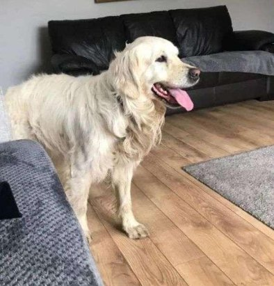

Search a city to find places
Discover nearby places
Find vets, shelters, zoos, pet shops and more near any city worldwide.
Vets, shelters, pet shops, groomers, zoos, aquariums and 24-hour emergency care — on a live map, for any city in the world.


Tap a type to filter the list and the map
PawBook tools for urgent moments

Lost & FoundAlert people nearby about a missing pet Book a vetVerified PawBook vets — in clinic or videoPlaces come from Google Maps and OpenStreetMap — check timings before you visit. Photos: Pexels.